Beautiful Chat 与官方版本的性能对比
官方 Beautiful Chat（42b61d8）对本仓库 05cf671，回放同样的 11 段对话。横条先画成官方的长度，再收到本仓库的长度，淡色留下的就是省掉的那一截。
页面后半段换了对照组：不开插件、Paseo 自己渲染，看装上这个插件是更省还是更费。
Paseo 0.11.2 Web 生产构建，无头 Chrome 155。两个插件装在同一个隔离 daemon 上，每次只启用一个，按场景交替各跑 3 次，表中取中位数。两边都用默认设置。测量时机器上还有别的任务在跑（负载 20–50），绝对毫秒数偏高；两边交替测量，相对比较仍然成立。回放速度：100 轮历史用最大速度，展开的工具用 4 倍速，其余按录制时的节奏。
最忙那张卡片的提交时间
纵轴是场景，横轴是提交时间的 p95，对数刻度。11 个场景里本仓库有 11 个更快，6 个收进 4ms 虚线以内。100 轮历史是 110 张卡片同时停在正在生成区、按最大速度回放，是最重的一项。

| 场景 | 官方 p95 | 本仓库 p95 | 变化 |
|---|---|---|---|
| 代码块流式 | 12.3 | 1.2 | 90% |
| 大 diff | 254 | 5.4 | 98% |
| 100 轮历史 | 138 | 30.3 | 78% |
| 长回复 | 12.1 | 1.3 | 89% |
| 混合一轮 | 27.0 | 11.3 | 58% |
| 读 20 个文件 | 174 | 4.3 | 98% |
| 思考散文 | 6.2 | 2.9 | 53% |
| 思考分节 | 5.7 | 2.8 | 51% |
| 大段终端 | 31.7 | 4.0 | 87% |
| 表格流式 | 5.5 | 1.2 | 78% |
| 展开的工具 | 22.3 | 4.4 | 80% |
单位是毫秒。每次回放取提交时间 p95 最高的那类卡片。左侧有竖线的行没进 4ms。
帧和动画
| 场景 | 掉帧 | 最长帧 | 长任务 | 结束时的循环动画 |
|---|---|---|---|---|
| 代码块流式 | 0.8% → 0.4% | 117 → 67 | 0 → 0 | 0 → 0 |
| 大 diff | 14.7% → 1.2% | 517 → 117 | 6 → 0 | 3 → 0 |
| 100 轮历史 | 76.8% → 19.2% | 367 → 200 | 73 → 7 | 344 → 0 |
| 长回复 | 0.5% → 0.3% | 117 → 50 | 0 → 0 | 0 → 0 |
| 混合一轮 | 0.8% → 1.0% | 67 → 133 | 0 → 0 | 21 → 1 |
| 读 20 个文件 | 3.5% → 0.7% | 250 → 83 | 1 → 0 | 72 → 0 |
| 思考散文 | 0.8% → 0.9% | 133 → 167 | 0 → 0 | 0 → 0 |
| 思考分节 | 0.5% → 1.1% | 100 → 150 | 0 → 0 | 0 → 0 |
| 大段终端 | 1.6% → 1.0% | 133 → 100 | 1 → 0 | 2 → 0 |
| 表格流式 | 0.9% → 0.7% | 117 → 133 | 0 → 0 | 0 → 0 |
| 展开的工具 | 1.2% → 0.4% | 67 → 67 | 0 → 0 | 2 → 0 |
掉帧是比例，最长帧是毫秒，长任务是超过 50ms 的任务个数，循环动画是跑完时还挂着的个数。帧数据受机器负载影响大：相差一帧（17ms）以内、掉帧相差 0.1 个百分点以内记为持平，其余按好坏标色。
内存和渲染次数
| 场景 | 跑完时的堆 | GC 后常驻 | 插件渲染次数 |
|---|---|---|---|
| 代码块流式 | 111.0 → 114.6 | 109.2 → 107.9 | 454 → 439 |
| 大 diff | 316.7 → 110.0 | 197.2 → 106.4 | 29 → 20 |
| 100 轮历史 | 367.9 → 166.3 | 206.8 → 113.1 | 18,583 → 583 |
| 长回复 | 124.6 → 112.1 | 110.2 → 110.9 | 809 → 799 |
| 混合一轮 | 131.5 → 111.1 | 116.0 → 108.3 | 183 → 129 |
| 读 20 个文件 | 282.4 → 113.3 | 223.5 → 110.6 | 186 → 156 |
| 思考散文 | 125.0 → 107.3 | 107.4 → 106.6 | 803 → 457 |
| 思考分节 | 116.8 → 117.6 | 107.2 → 107.1 | 745 → 403 |
| 大段终端 | 124.9 → 110.9 | 118.6 → 106.5 | 33 → 20 |
| 表格流式 | 111.2 → 111.0 | 107.2 → 107.8 | 247 → 236 |
| 展开的工具 | 142.4 → 110.4 | 116.6 → 108.7 | 216 → 297 |
单位是 MB，用 CDP 读取。跑完时的堆不做 GC；GC 后常驻是跑完后强制回收两次再读。每轮开跑前的堆在 102–106MB 之间漂移，所以相差 1MB 以内记为持平。插件渲染次数是这一轮里插件卡片渲染的总次数；默认设置下用户消息由 Paseo 自己绘制，不算在本仓库里。
原始数据在 docs/bench/raw-latest/，用 docs/bench/tools/recheck-ab.mjs 采集，页面由 docs/perf/build.py 生成。这一组没有测 iOS。
和不开插件的 Paseo 比
对照组换成 Paseo 0.11.2 自己的渲染：同一个 daemon、同样 11 段回放，只在开和关这个插件之间切换。测量放在宿主上，原生行和插件行外面套的是同一个 React.Profiler，两边口径一致。
Web：整段回放的主线程时间
线性刻度，单位是秒，取 Chrome 统计的主线程任务时间。11 个场景都比原生短；文本流式最明显，代码块、思考、表格、长回复少了三到五成。

| 场景 | 原生 秒 | 本仓库 秒 | 变化 | 单行渲染 p95 ms |
|---|---|---|---|---|
| 代码块流式 | 3.65 | 1.91 | 48% | 2.7 → 1.2 |
| 大 diff | 0.45 | 0.40 | 11% | 2.0 → 2.1 |
| 100 轮历史 | 1.86 | 1.68 | 10% | 0.6 → 0.3 |
| 长回复 | 6.97 | 4.67 | 33% | 1.6 → 0.7 |
| 混合一轮 | 1.41 | 1.05 | 26% | 2.0 → 1.0 |
| 读 20 个文件 | 0.90 | 0.81 | 10% | 1.7 → 0.6 |
| 思考散文 | 2.39 | 1.45 | 39% | 0.9 → 0.5 |
| 思考分节 | 2.14 | 1.22 | 43% | 0.8 → 0.5 |
| 大段终端 | 0.86 | 0.61 | 29% | 1.7 → 1.5 |
| 表格流式 | 2.35 | 1.45 | 38% | 2.0 → 1.2 |
| 展开的工具 | 1.59 | 1.16 | 27% | 0.5 → 0.5 |
Web 生产构建，每格 3 次取中位数，原生和本仓库按场景交替跑，代码 de7c0d3。单行渲染 p95 是宿主行外壳上 React.Profiler 的读数，原生 → 本仓库。100 轮历史在前一轮里多 8%，这一轮少 10%，两次都在一成以内，算持平。
Web：回收之后的内存
跑完先强制一次垃圾回收，再读 JS 堆和 DOM 节点；不回收的话，还没回收的游离节点也会算进去，同一场景两次能差出一千多个。回收之后，JS 堆和原生基本一样，多出的零到四 MB 大约是插件代码本身；长回复少四分之一。DOM 节点除 100 轮历史多 1% 外，都更少或持平。
| 场景 | 原生 堆 MB | 本仓库 堆 MB | 原生 DOM | 本仓库 DOM |
|---|---|---|---|---|
| 代码块流式 | 123 | 122 | 2,559 | 2,139 |
| 大 diff | 116 | 120 | 1,046 | 991 |
| 100 轮历史 | 124 | 126 | 1,780 | 1,797 |
| 长回复 | 165 | 124 | 4,716 | 2,835 |
| 混合一轮 | 121 | 122 | 1,431 | 1,363 |
| 读 20 个文件 | 120 | 124 | 1,476 | 1,440 |
| 思考散文 | 117 | 120 | 1,040 | 979 |
| 思考分节 | 117 | 121 | 1,040 | 981 |
| 大段终端 | 117 | 121 | 1,047 | 986 |
| 表格流式 | 121 | 122 | 1,496 | 1,214 |
| 展开的工具 | 120 | 124 | 1,047 | 986 |
同一批跑次，3 次中位数。同一格的三次之间，堆相差不超过 3MB。
iOS：单次提交里所有行加起来
线性刻度，单位毫秒，画的是 p95。长回复从 59 收到 8，代码块、表格、混合一轮都收到一半以下。100 轮历史和大段终端比原生长。iOS 上的圆点走 native driver，不受 Web 圆点修复影响。

| 场景 | 原生 p95 | 本仓库 p95 | 变化 |
|---|---|---|---|
| 代码块流式 | 23.6 | 6.6 | 72% |
| 大 diff | 13.5 | 6.1 | 55% |
| 100 轮历史 | 77.5 | 104.1 | 34% |
| 长回复 | 59.4 | 8.4 | 86% |
| 混合一轮 | 16.0 | 7.5 | 53% |
| 读 20 个文件 | 16.3 | 8.7 | 46% |
| 思考散文 | 4.1 | 4.3 | 6% |
| 思考分节 | 4.6 | 3.9 | 15% |
| 大段终端 | 16.2 | 19.9 | 22% |
| 表格流式 | 14.8 | 6.9 | 54% |
| 展开的工具 | 5.6 | 3.1 | 44% |
单位是毫秒。iOS 18.6 模拟器上的 Paseo 0.11.2 开发版，每次运行前冷启动 App，每格 2 次（混合一轮 4 次）取中位数，代码 c00be20。开发版的绝对值只能横向比；思考散文的 6% 在噪声以内。
方法、全部表格和原始数据在 docs/bench/native-vs-fork。